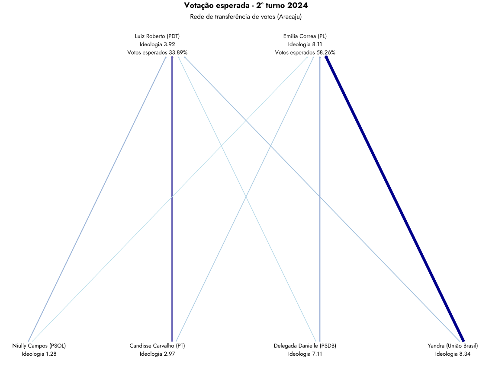
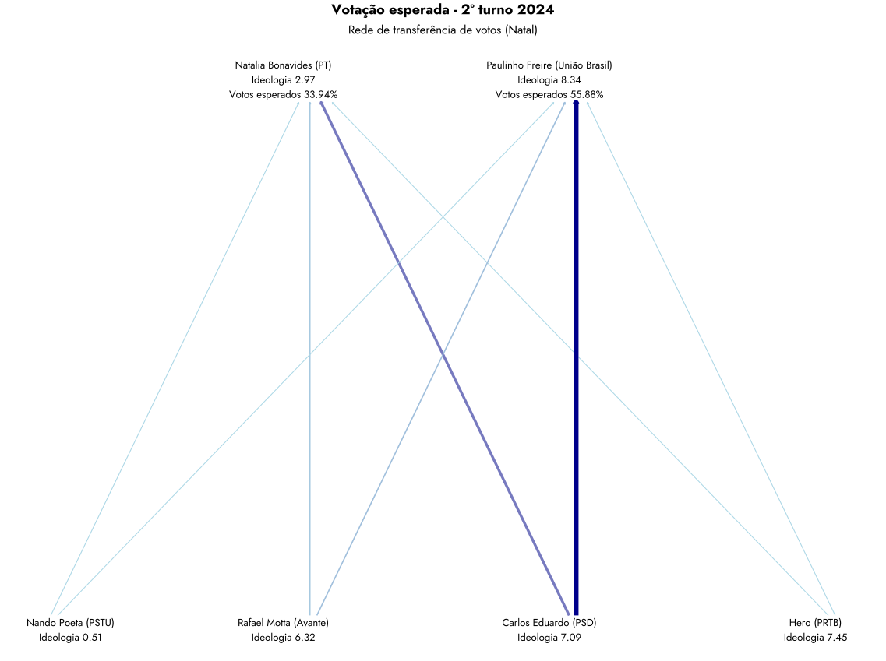

| Resultados previstos pelo modelo de transferência de votos por capital | ||
| Capital | Vencedor | Votos |
|---|---|---|
| Aracaju | Emilia Correa | 58.26% |
| Belo Horizonte | Bruno Engler | 52.29% |
| Belém | Igor Normando | 54.65% |
| Campo Grande | Adriane Lopes | 47.98% |
| Cuiabá | Abilio | 64.24% |
| Curitiba | Eduardo Pimentel | 47.48% |
| Fortaleza | Andre Fernandes | 52.85% |
| João Pessoa | Cicero Lucena | 62.83% |
| Manaus | David Almeida | 47.56% |
| Natal | Paulinho Freire | 55.88% |
| Palmas | Eduardo Siqueira Campos | 51.80% |
| Porto Alegre | Sebastiao Melo | 56.36% |
| Porto Velho | Mariana Carvalho | 54.47% |
| São Paulo | Ricardo Nunes | 53.85% |
O que é polarização afetiva. E como podemos prever eleições a partir dela
Nos 2º turnos das eleições, as transferências de votos normalmente acontecem para candidatos próximos ideologicamente
Recife, 14 de outubro de 2024
Este estudo apresenta um novo método para estimar a transferência de votos de acordo com a polarização afetiva. Inspirado em estudos recentes sobre o comportamento eleitoral na América Latina e Europa, podemos entender como a escolha dos eleitores é influenciada por suas emoções em relação aos candidatos e a sua percepção de quais candidatos são próximos ideologicamente.
O ponto central é que, mesmo em países com diversos partidos, como o Brasil, os eleitores tendem a se dividir em dois grandes blocos ideológicos: esquerda e direita. Isso afeta diretamente como os votos se transferem entre candidatos no segundo turno das eleições municipais, mesmo quando os concorrentes são ideologicamente próximos.
Usando modelos matemáticos que medem a distância ideológica entre candidatos, calculamos como os votos se movimentam entre o primeiro e o segundo turno, e estimamos quais os prováveis vencedores das eleições de 2024 em 15 capitais brasileiras.
1 A polarização afetiva
O que você pensaria se o seu filho se casasse com uma bolsonarista/petista?
Essa é uma das perguntas clássicas utilizadas por especialistas para mensurar o que chamadmos de polarização afetiva.
O termo é usado por cientistas políticos como uma forma de explicar as diferenças de afeto que eleitores sentem em relação ao grupo ideológico que pertencem (direita, por exemplo), e ao grupo que percebem como contrário ao seu (esquerda, no caso).
Neste jogo de “nós” e “eles”, a identidade política está mais ligada ao afeto do que a um conjunto coerente de crenças políticas. Assim, quando diante de uma situação em que seu candidato preferido não está mais concorrendo, eleitores tendem a migrar o voto num movimento afetivo para o candidato mais semelhante que encontrem. E com isso é possível arriscar prever o resultado do 2º turno de eleições.
2 A transferência de votos
Para calcular a transferência de votos, o primeiro passo é situar os candidatos ideologicamente, e medir a distância entre eles. Graças aos estudos de Bolognesi, Codato e Ribeiro (2023), temos uma medida bastante razoável da ideologia e cada partido. Com isso, situamos os concorrentes numa espécie de “régua de ideologia”, e medimos a distância ideológica entre eles.
Por exemplo: se um candidato é do PDT, ele está no marco 3,92 da escala de ideologia que estamos usando. Já um candidato do PL está no marco 8,11 da mesma escala. A distância entre eles é de 4,19 pontos de ideologia.
E a transferência de votos?
Continuando com o nosso exemplo, imagine uma candidata da União Brasil, que está no marco 8.34 da nossa escala de ideologia. É razoável supor que a maior parte de seus votos será transferida para o candidato do PL, cuja distância para ela é de apenas 0.23.
Porém, aqui entra um segundo componente importante que é o total de votos que o candidato teve no 1º turno. Afinal de contas, se nossa candidata da União Brasil recebeu poucos votos no primeiro turno, mesmo tendo proximidade ideológica, ela não terá muito o que transferir para o candidato do PL.
3 As possibilidades e as limitações
A principal limitação deste método é que ele aposta bastante em um medida, distância ideológica, e é um efeito, a polarização partidária. Além disso, ele é uma fotografia, tirada logo após o anúncio dos concorrentes do 2º turno.
Porém, ele é i) infinitamente mais barato do que a realização de pesquisas eleitoriais, e ii) pode ser usado para perceber as tendências de migração em zonas e seções, aumentando a inteligência sobre o fenômeno eleitoral.
4 Resultado geral
Apresentamos o resultado geral do modelo, com uma tabela resumo contendo os prováveis vencedores e os percentuais (%) estimados.
Também apresentamos os resultados detalhados por capital, com a identificação de qual candidato e em quais quantidades devem ser transferidos os votos para os concorrentes do 2º turno.
E após os resultados, temos o Apêndice, com a metodologia detalhada e tabelas explicativas das simulações realizadas.
4.1 Aracaju

4.2 Belo Horizonte

4.3 Belém
4.4 Campo Grande

4.5 Cuiabá

4.6 Curitiba

4.7 Fortaleza

4.8 João Pessoa

4.9 Manaus

4.10 Natal

4.11 Palmas

4.12 Porto Alegre

4.13 Porto Velho

4.14 São Paulo

5 Apêndice
5.1 Teoria
O arcabouço teórico 1 se baseia nos argumentos utilizados por Comellas e Torcal (2023), o referido estudo foca nos contextos da Europa do Sul e da América Latina para entender como os vínculos emocionais dos cidadãos com os rótulos políticos de esquerda e direita moldam suas atitudes políticas.
1 Materiais de replicação estão disponíveis em:
Em contornos mais gerais o argumento central dos autores é que a polarização afetiva leva os eleitores a se agruparem em blocos de esquerda e direita, com fortes vínculos emocionais com seu próprio grupo e animosidade em relação ao grupo ideológico oposto. Este fenômeno é proeminente mesmo em sistemas multipartidários onde várias formações políticas operam.
Nós consideramos que esta assertiva também é válida para o caso brasileiro (Rennó, 2023), contudo, cabe salientar que a mesma foi desenvolvida originalmente para os casos de Argentina, Chile, Itália, Portugal e Espanha.
De acordo com Tajfel e Turner (1979), sob condições de competição de grupo2, o senso de pertencimento a um grupo incute avaliações positivas do grupo interno e, correspondentemente, avaliações hostis de grupos externos. No caso do partidarismo, essa divergência no afeto em relação aos partidos de dentro e de fora — polarização afetiva — aumentou substancialmente nas últimas quatro década (Ivengar e Westwood, 2015).
2 Para mais detalhes sobre a literatura sobre polarização em sistemas multiparidiários, sugerimos: https://www.sciencedirect.com/science/article/pii/S0261379423000379
As etiquetas ideológicas de “esquerda” e “direita” desempenham um papel fundamental em diversos sistemas multipartidários, atuando como identificadores de grupos. Esse fenômeno faz com que as pessoas tendam a enxergar os partidos e seus apoiadores dentro de seu próprio espectro ideológico como parte do “nosso grupo”, enquanto os adversários do outro espectro são vistos como “eles” (Druckman e Levendusky, 2019).
Para Vegetti e Širinić (2019), esse cenário intensifica as diferenças entre os adeptos desses dois blocos ideológicos. Essa identificação não apenas segmenta a sociedade, mas também fomenta um tipo de polarização afetiva bipolar em que a animosidade entre os apoiadores da esquerda e da direita se torna cada vez mais pronunciada.
Além disso, a ideologia fundamentada na identidade não necessariamente reflete um conjunto coerente de crenças políticas. Isso significa que os efeitos de polarização podem surgir mesmo entre cidadãos que, em questões chave, adotam posições centristas ou possuem crenças ideologicamente inconsistentes em diferentes temas. Ou seja, a polarização não depende exclusivamente de alinhamentos claros em questões políticas, mas também da forte identificação com um grupo ideológico.
No Brasil, o livro a Biografia do Abismo representa, salvo melhor juízo, a primeira tentativa de divulgar, para o público não acadêmico, esse fenômeno, além de discutir suas possíveis causas e consequências.
5.2 Metodologia
O modelo inicia baseando-se no percentual dos votos válidos que cada candidato em uma das quinze capitais3, que irão ao segundo turno, recebeu. Concorrerão no segundo turno da eleição os dois primeiros colocados no primeiro turno.
3 De acordo com o Tribunal Superior Eleitoral (TSE), 15 capitais brasileiras terão segundo turno para o Executivo municipal de 2024. São elas: Aracaju (Sergipe), Belém (Pará), Belo Horizonte (MG), Campo Grande (Mato Grosso do Sul), Cuiabá (Mato Grosso), Curitiba (Paraná), Fortaleza (Ceará), João Pessoa (Paraíba), Manaus (Amazonas), Natal (Rio Grande do Norte), Palmas (Tocantins), Porto Alegre (Rio Grande do Sul), Porto Velho (Rondônia) e São Paulo (São Paulo)
Espera-se, no entanto, que haja transferência de votos para os candidatos que irão ao segundo turno da eleição de acordo com a posição ideológica do partido ao qual fazem parte. Desse modo, para calcular a transferência de votos a partir da polarização ideológica entre os candidatos, definimos a posição relativa de cada competidor no espectro ideológico em relação ao partido que pertencem.
Neste trabalho, reproduzimos a classificação proposta por Bolognesi, Codato e Ribeiro (2023). Os autores estabelecem uma escala de ideologia na qual aos partido de esquerda atribuem-se valores próximos a 0, enquanto aos partido de direita, atribuem-se valores mais próximos a 10.
Depois disso, devemos estabelecer a relação teórica de interess Seguindo X, W e Z, nossa hipótese de trabalho sustenta que quanto maior a distância ideológica entre os partidos aos quais seus candidatos pertencem, menor será o potencial de transferência de votos entre eles, conforme ilustra a Figura 1
5.2.1 Aracaju
| Votação esperada - 2º turno 2024 | ||
| Modelo de transferência de votos (Aracaju) | ||
| Modelo | Luiz Roberto (PDT) | Emilia Correa (PL) |
|---|---|---|
| Simples | 33.89% | 58.26% |
| Potência | 35.72% | 64.28% |
| Exponencial | 33.58% | 58.73% |
| Sigmoide | 34.81% | 58.44% |
| Quadrático | 30.51% | 58.56% |
| Gaussiana | 29.92% | 59.06% |
| Polinomial | 43.14% | 56.86% |
| Gompertz | 43.93% | 56.07% |
| Hiperbólico | 38.52% | 61.48% |
| Fonte: Gauss Analítica | ||
5.2.2 Belo Horizonte
| Votação esperada - 2º turno 2024 | ||
| Modelo de transferência de votos (Belo Horizonte) | ||
| Modelo | Fuad Noman (PSD) | Bruno Engler (PL) |
|---|---|---|
| Simples | 47.71% | 52.29% |
| Potência | 54.00% | 46.00% |
| Exponencial | 47.74% | 52.26% |
| Sigmoide | 47.43% | 52.57% |
| Quadrático | 47.69% | 52.31% |
| Gaussiana | 47.56% | 52.44% |
| Polinomial | 48.45% | 51.55% |
| Gompertz | 45.50% | 54.50% |
| Hiperbólico | 47.62% | 52.38% |
| Fonte: Gauss Analítica | ||
5.2.3 Belém
| Votação esperada - 2º turno 2024 | ||
| Modelo de transferência de votos (Belém) | ||
| Modelo | Igor Normando (MDB) | Delegado Eder Mauro (PL) |
|---|---|---|
| Simples | 54.65% | 41.48% |
| Potência | 54.25% | 45.75% |
| Exponencial | 55.06% | 41.82% |
| Sigmoide | 55.36% | 41.96% |
| Quadrático | 54.58% | 41.77% |
| Gaussiana | 55.35% | 42.44% |
| Polinomial | 57.78% | 42.22% |
| Gompertz | 56.25% | 43.75% |
| Hiperbólico | 56.60% | 43.40% |
| Fonte: Gauss Analítica | ||
5.2.4 Campo Grande
| Votação esperada - 2º turno 2024 | ||
| Modelo de transferência de votos (Campo Grande) | ||
| Modelo | Adriane Lopes (PP) | Rose Modesto (União Brasil) |
|---|---|---|
| Simples | 47.98% | 44.79% |
| Potência | 52.84% | 47.16% |
| Exponencial | 49.80% | 46.46% |
| Sigmoide | 51.45% | 48.55% |
| Quadrático | 46.32% | 42.57% |
| Gaussiana | 48.45% | 44.14% |
| Polinomial | 51.04% | 48.96% |
| Gompertz | 50.64% | 49.36% |
| Hiperbólico | 51.46% | 48.54% |
| Fonte: Gauss Analítica | ||
5.2.5 Cuiabá
| Votação esperada - 2º turno 2024 | ||
| Modelo de transferência de votos (Cuiabá) | ||
| Modelo | Ludio (PT) | Abilio (PL) |
|---|---|---|
| Simples | 33.52% | 64.24% |
| Potência | 29.46% | 70.54% |
| Exponencial | 30.78% | 66.85% |
| Sigmoide | 29.73% | 66.40% |
| Quadrático | 29.49% | 67.94% |
| Gaussiana | 28.31% | 69.01% |
| Polinomial | 29.69% | 70.31% |
| Gompertz | 52.07% | 47.93% |
| Hiperbólico | 35.64% | 64.36% |
| Fonte: Gauss Analítica | ||
5.2.6 Curitiba
| Votação esperada - 2º turno 2024 | ||
| Modelo de transferência de votos (Curitiba) | ||
| Modelo | Cristina Graeml (PMB) | Eduardo Pimentel (PSD) |
|---|---|---|
| Simples | 45.56% | 47.48% |
| Potência | 52.27% | 47.73% |
| Exponencial | 46.30% | 48.22% |
| Sigmoide | 48.25% | 50.01% |
| Quadrático | 43.00% | 45.11% |
| Gaussiana | 41.75% | 44.32% |
| Polinomial | 49.26% | 50.74% |
| Gompertz | 48.83% | 51.17% |
| Hiperbólico | 49.04% | 50.96% |
| Fonte: Gauss Analítica | ||
5.2.7 Fortaleza
| Votação esperada - 2º turno 2024 | ||
| Modelo de transferência de votos (Fortaleza) | ||
| Modelo | Evandro Leitao (PT) | Andre Fernandes (PL) |
|---|---|---|
| Simples | 42.56% | 52.85% |
| Potência | 40.29% | 59.71% |
| Exponencial | 42.77% | 52.88% |
| Sigmoide | 43.83% | 52.06% |
| Quadrático | 41.09% | 52.73% |
| Gaussiana | 41.97% | 52.36% |
| Polinomial | 46.08% | 53.92% |
| Gompertz | 48.35% | 51.65% |
| Hiperbólico | 45.38% | 54.62% |
| Fonte: Gauss Analítica | ||
5.2.8 João Pessoa
| Votação esperada - 2º turno 2024 | ||
| Modelo de transferência de votos (João Pessoa) | ||
| Modelo | Cicero Lucena (Progressistas) | Marcelo Queiroga (PL) |
|---|---|---|
| Simples | 62.83% | 30.50% |
| Potência | 73.84% | 26.16% |
| Exponencial | 61.28% | 29.73% |
| Sigmoide | 59.62% | 30.18% |
| Quadrático | 60.32% | 28.27% |
| Gaussiana | 59.39% | 28.78% |
| Polinomial | 63.87% | 36.13% |
| Gompertz | 60.50% | 39.50% |
| Hiperbólico | 65.50% | 34.50% |
| Fonte: Gauss Analítica | ||
5.2.9 Manaus
| Votação esperada - 2º turno 2024 | ||
| Modelo de transferência de votos (Manaus) | ||
| Modelo | David Almeida (Avante) | Capitao Alberto Neto (PL) |
|---|---|---|
| Simples | 47.56% | 44.61% |
| Potência | 46.43% | 53.57% |
| Exponencial | 49.47% | 44.80% |
| Sigmoide | 54.69% | 44.63% |
| Quadrático | 42.96% | 43.29% |
| Gaussiana | 42.13% | 41.93% |
| Polinomial | 55.73% | 44.27% |
| Gompertz | 53.25% | 46.75% |
| Hiperbólico | 52.38% | 47.62% |
| Fonte: Gauss Analítica | ||
5.2.10 Natal
| Votação esperada - 2º turno 2024 | ||
| Modelo de transferência de votos (Natal) | ||
| Modelo | Natalia Bonavides (PT) | Paulinho Freire (União Brasil) |
|---|---|---|
| Simples | 33.94% | 55.88% |
| Potência | 38.30% | 61.70% |
| Exponencial | 32.17% | 58.16% |
| Sigmoide | 31.76% | 62.04% |
| Quadrático | 30.08% | 54.13% |
| Gaussiana | 28.47% | 55.55% |
| Polinomial | 40.81% | 59.19% |
| Gompertz | 46.40% | 53.60% |
| Hiperbólico | 37.60% | 60.54% |
| Fonte: Gauss Analítica | ||
5.2.11 Palmas
| Votação esperada - 2º turno 2024 | ||
| Modelo de transferência de votos (Palmas) | ||
| Modelo | Eduardo Siqueira Campos (Podemos) | Janad Valcari (PL) |
|---|---|---|
| Simples | 51.80% | 48.20% |
| Potência | 62.07% | 37.93% |
| Exponencial | 51.07% | 48.93% |
| Sigmoide | 48.71% | 51.29% |
| Quadrático | 52.97% | 47.03% |
| Gaussiana | 51.71% | 48.29% |
| Polinomial | 47.59% | 52.41% |
| Gompertz | 43.74% | 54.84% |
| Hiperbólico | 50.36% | 49.64% |
| Fonte: Gauss Analítica | ||
5.2.12 Porto Alegre
| Votação esperada - 2º turno 2024 | ||
| Modelo de transferência de votos (Porto Alegre) | ||
| Modelo | Maria do Rosario (PT) | Sebastiao Melo (MDB) |
|---|---|---|
| Simples | 37.01% | 56.36% |
| Potência | 42.73% | 57.27% |
| Exponencial | 38.82% | 56.13% |
| Sigmoide | 41.02% | 57.41% |
| Quadrático | 36.77% | 53.30% |
| Gaussiana | 38.82% | 51.95% |
| Polinomial | 40.69% | 59.31% |
| Gompertz | 37.36% | 62.64% |
| Hiperbólico | 40.45% | 59.55% |
| Fonte: Gauss Analítica | ||
5.2.13 Porto Velho
| Votação esperada - 2º turno 2024 | ||
| Modelo de transferência de votos (Porto Velho) | ||
| Modelo | Leo (Podemos) | Mariana Carvalho (União Brasil) |
|---|---|---|
| Simples | 40.63% | 54.47% |
| Potência | 47.77% | 52.23% |
| Exponencial | 41.71% | 54.73% |
| Sigmoide | 42.37% | 56.51% |
| Quadrático | 40.45% | 51.60% |
| Gaussiana | 40.43% | 51.25% |
| Polinomial | 44.56% | 55.44% |
| Gompertz | 39.86% | 60.14% |
| Hiperbólico | 43.03% | 56.97% |
| Fonte: Gauss Analítica | ||
5.2.14 São Paulo
| Votação esperada - 2º turno 2024 | ||
| Modelo de transferência de votos (São Paulo) | ||
| Modelo | Guilherme Boulos (PSOL) | Ricardo Nunes (MDB) |
|---|---|---|
| Simples | 36.07% | 53.85% |
| Potência | 35.98% | 64.02% |
| Exponencial | 32.98% | 56.86% |
| Sigmoide | 32.68% | 58.05% |
| Quadrático | 31.01% | 56.50% |
| Gaussiana | 29.28% | 57.72% |
| Polinomial | 38.58% | 61.42% |
| Gompertz | 56.46% | 43.54% |
| Hiperbólico | 40.87% | 59.13% |
| Fonte: Gauss Analítica | ||